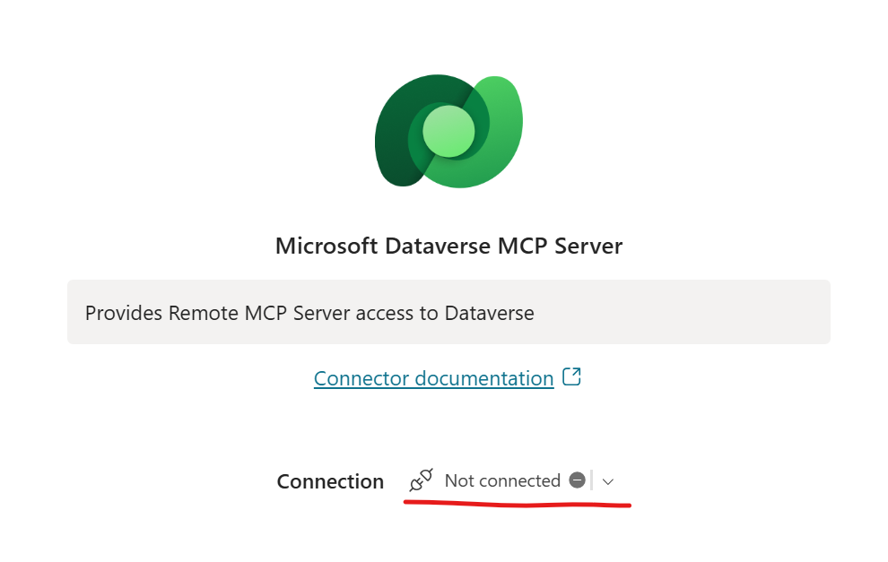
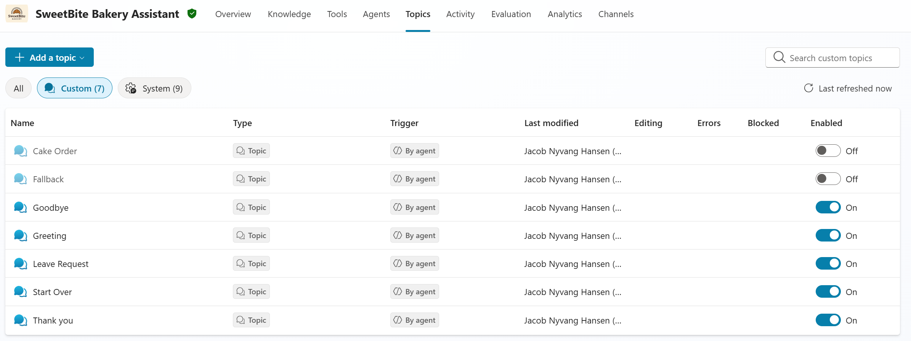
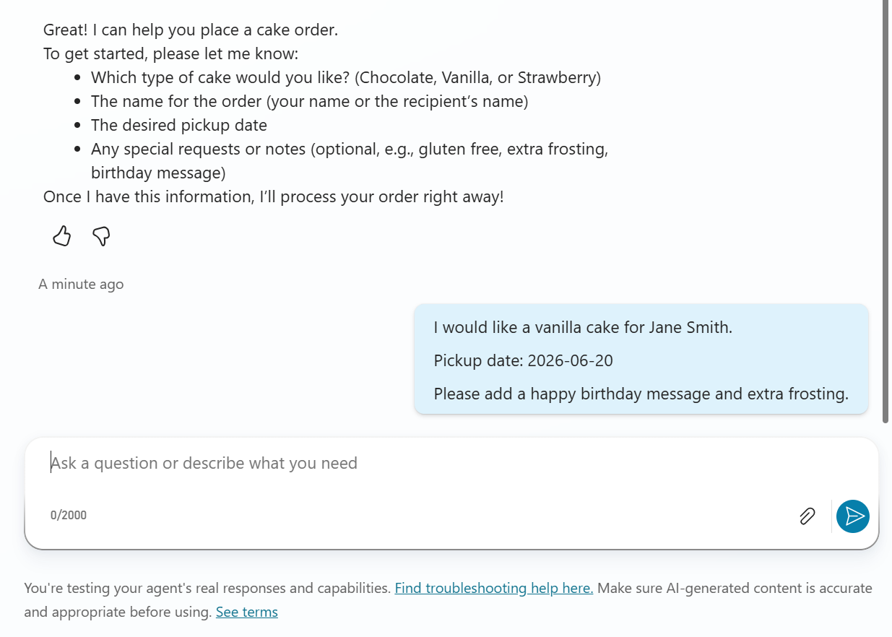
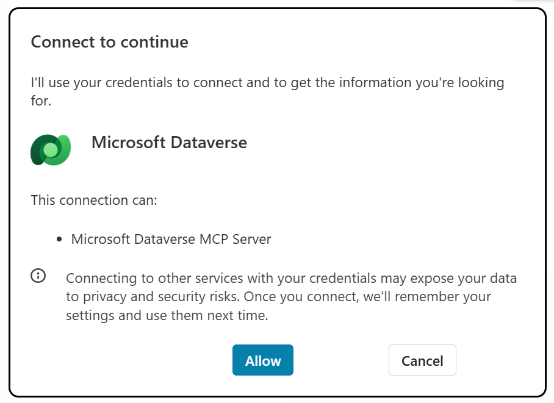
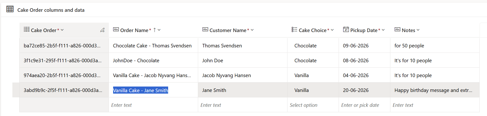

Lab 5 · ~45 minutes
Working with Business Data using Dataverse MCP
SweetBite Bakery wants to store cake orders in Dataverse instead of only discussing them in chat. In this lab, you'll connect your agent to Dataverse and create real business records using MCP.
🥐 What you'll do
- Create a Dataverse table for cake orders
- Add the Dataverse MCP tool
- Configure order creation instructions
- Create cake orders through chat
- Verify records in Dataverse
Step 1: Add the Dataverse MCP tool to our agent
- Go to Tools in the top menu.
- Select + Add a tool.
- In the search bar, type Dataverse.
- Filter by Model Context Protocol.
- Choose the connector action that says: Provides Remote MCP Server access to Dataverse.
- If you are not already connected, create a new connection.
- Select Add and configure.
Add connection

Step 2: Disable the Cake order and fallback topics
- Go to Topics.
- Find the Cake Order topic.
- Turn off the Cake Order topic.
- Find the Fallback topic.
- Turn off the Fallback topic.
Expected result

We turn off these topics because we are going to implement the same functionality using instructions. This makes the agent more dynamic in how it interacts with the user, instead of relying on fixed topic flows.
Step 3: Update instructions of the agent
The Dataverse MCP can access Dataverse data. To keep this lab focused, instruct the agent to only use the Cake Orders table.
- Open the agent instructions.
- Add the following Dataverse MCP usage instructions.
The agent relies on instructions to know how to use the tools effectively. By providing detailed instructions, we ensure that the agent creates records in the correct format and with all the necessary information.
Step 4: Test the agent
- Trigger the cake ordering process by saying: I want to order a cake.
- Provide the necessary information when prompted.
- Verify that the agent creates the order or asks follow-up questions if required information is missing.
Troubleshoot

Troubleshoot

Step 5: Verify the Dataverse record
- Open the Cake Orders table.
- Open the table data.
- Confirm that a new record was created.
- Verify that the values match the conversation.
Expected result

Step 6: Explore the capabilities of the Dataverse MCP (Optional)
Now that the agent can create cake orders, try asking questions that require it to retrieve and analyze information from Dataverse.
Suggested prompts
- How many cake orders have been placed?
- Show me all chocolate cake orders.
- What is the latest cake order?
- List all orders scheduled for pickup next week.
- Which cake type is the most popular?
- How many chocolate, vanilla, and strawberry cakes have been ordered?
- Show me all orders that contain special requests.
- Who has ordered the most cakes?
- Summarize the current cake orders.
- Analyze order trends and tell me what you observe.
The agent uses the Dataverse MCP to retrieve records from the Cake Orders table. It can then combine those records with the reasoning capabilities of the language model to search, summarize, compare, and analyze the data.
🎯 Checkpoint
- ✅ Added the Dataverse MCP tool
- ✅ Created a cake order through chat
- ✅ Verified the record in Dataverse